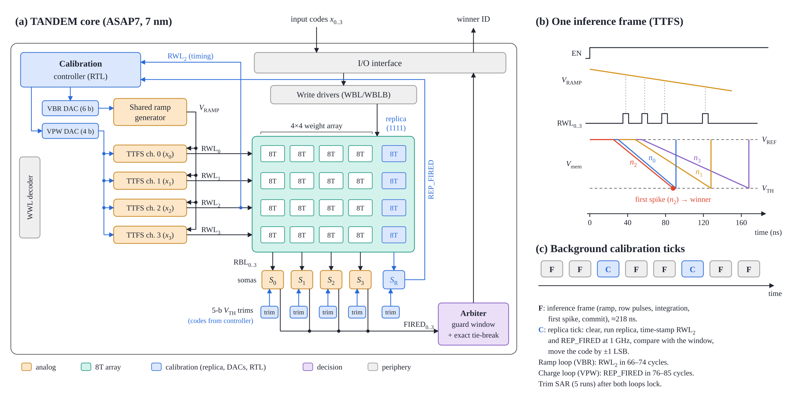

Featured · Submitted to IEEE TCAS-I
TANDEM: a PVT-robust time-to-first-spike SRAM compute-in-memory core
What: A 7 nm ASAP7 8T SRAM compute-in-memory core that runs spiking neural networks, with on-chip calibration of timing and read charge.
Result: Correct decisions across all 27 process, voltage and temperature corners (17 of 27 without calibration). 9.45 pJ per frame at 0.57 V, 26% less energy than at 0.63 V.
Verification: Closed-loop SPICE–RTL co-simulation of 1,306 transistors, plus all 21 converged Monte Carlo samples.
Accuracy: 98.68% on MNIST and 93.12% on CIFAR-10 with circuit-fitted SNN evaluation.